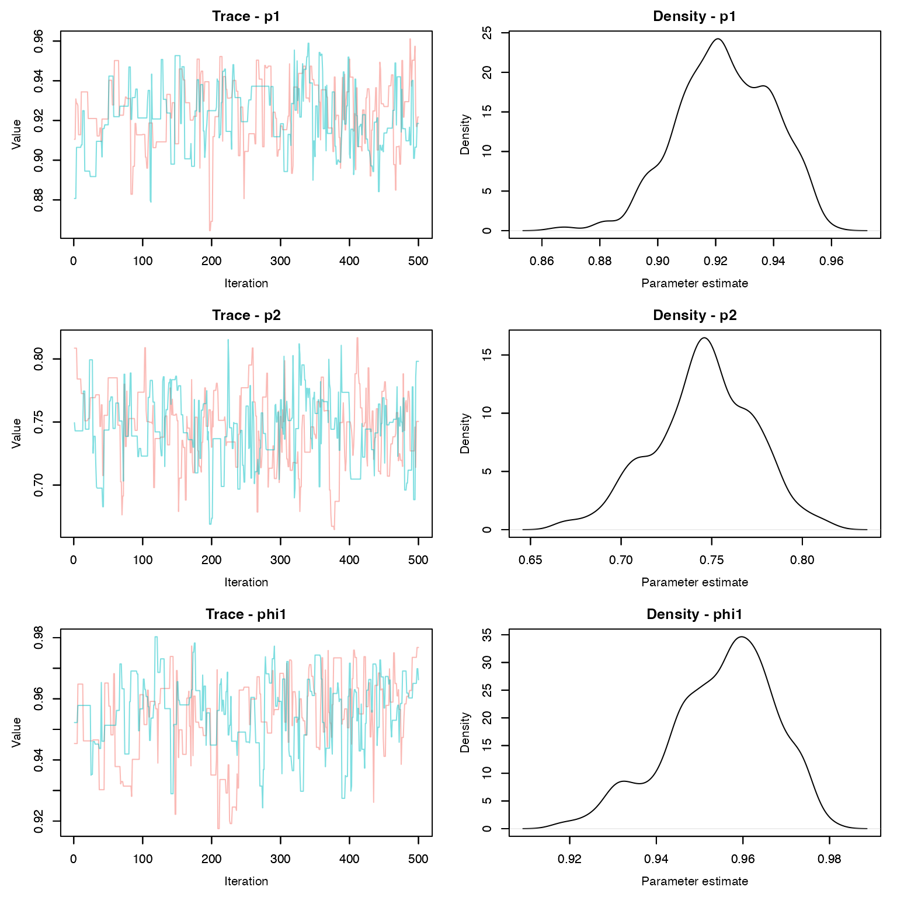
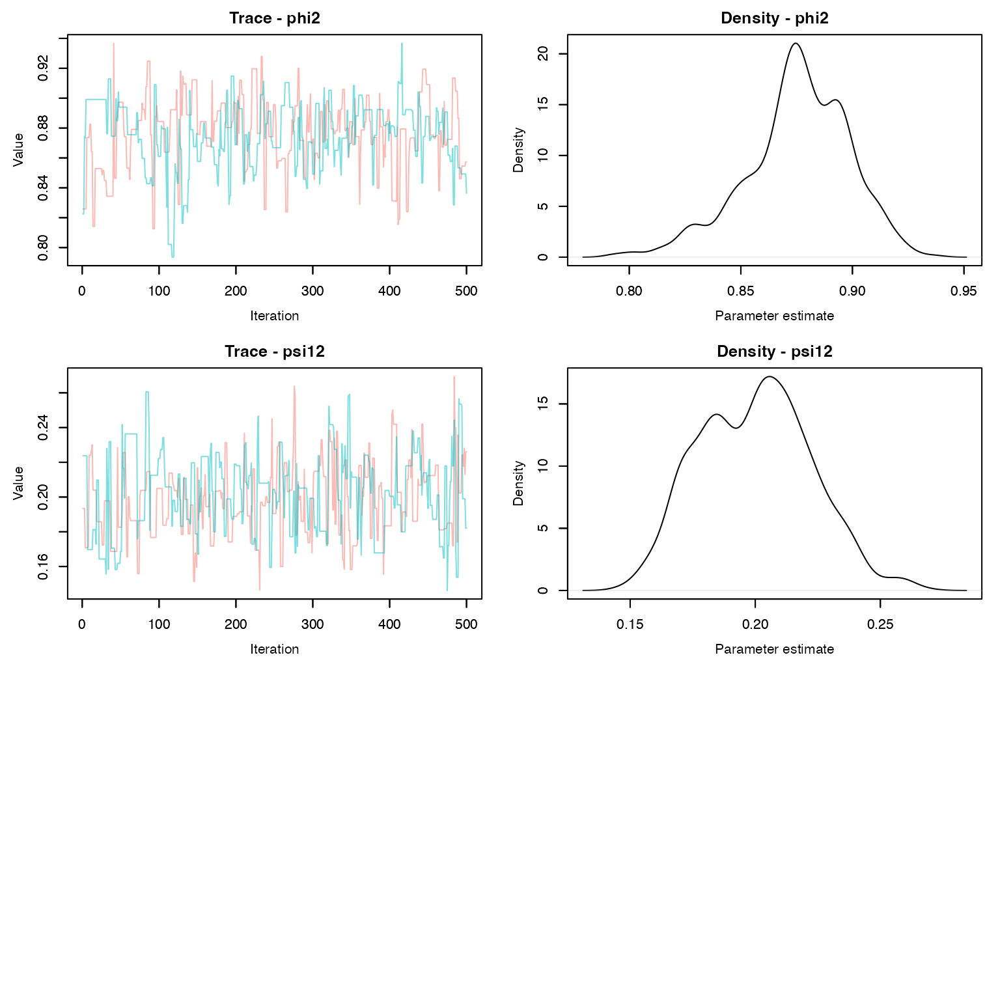

Lab11: Discrete and continuous-time multistate models
Lab11_Multistate.RmdIn this lab, we will explore multi-state models fit using both discrete and continuous time formulations. We will first simulate a capture-recapture data set with continuous transitions and detections, and then fit the model as a discrete-time multi-state model by binning detections. Finally, we will compare the discrete time model to a continuous-time formulation.
Model structure
For this example, we will assume alive individuals can be in one of two states but can only transition from state 1 to state 2. Call this transition rate \eta_{1,2}. Both groups experience a state-specific hazard rate h_1 and h_2. All rates are constant. The transition rate matrix is thus:
\mathbf Q = \left[\begin{array} {ccc} -[\eta_{1,2} + h_1] & \eta_{1,2} & h_{1}\\ 0 & -h_2 & h_2\\ 0 & 0 & 0 \end{array}\right]
Individuals can be detected in the alive states based on state-specific detection rates \lambda_1 and \lambda_2. The observation matrix is:
\mathbf \Lambda = \left[\begin{array} {ccc} \lambda_1 & 0 & 0\\ 0 & \lambda_2 & 0\\ 0 & 0 & 0 \end{array}\right]
Simulating the data
To simulate the detection data, we will approximate continuous-time
state transitions by simulating each individual’s state on each day,
based on their state in the previous day. First, define parameters and
the transition rate matrix Q:
library(expm)
set.seed(584893)
## Set parameters
N <- 100 # Number of individuals
T <- 100 # Length of study, in days
h <- c(0.0025, 0.01) # Hazard rates
eta12 <- 0.025 # Transition rate from state 1 to state 2
lambda <- c(0.25, 0.15, 0) # Detection rates
## Define transition rate matrix and detection matrix
Q <- matrix(0, 3, 3)
Q[1, 1] <- -(eta12 + h[1])
Q[1, 2] <- eta12
Q[1, 3] <- h[1]
Q[2, 2] <- -h[2]
Q[2, 3] <- h[2]Next, create a matrix s to store each individual’s state
on each day. Then use Q to simulate states:
## Simulate true states
s <- matrix(NA, nrow = N, ncol = T)
s[,1] <- 1
for(i in 1:N){
for(t in 2:T){
s[i, t] <- which(rmultinom(1, 1, prob = expm(Q)[s[i, t - 1],]) == 1)
}
}
# Change state 3 to 0 (dead)
s[s == 3] <- 0Next we simulate encounter histories based on the detection intensity
\lambda. Because the length of the
encounter histories will differ among individuals, we first simulate the
observations as a list and then convert the list into a matrix based on
the longest detection history. We will also keep track of the state of
each detection (state_list):
## Simulate encounter histories as a list because
## history length differs among individuals
det_list <- state_list <- vector(mode = "list", length = N)
U1 <- U2 <- vector(length = N)
# How many days was each individual in each state?
s1 <- apply(s, 1, function(x) sum(x == 1))
s2 <- apply(s, 1, function(x) sum(x == 2))
for(i in 1:N){
U1[i] <- rpois(1, lambda[1] * s1[i]) # Number of detections
dets1 <- sort(runif(U1[i], 0, s1[i])) # Time of detections
state1 <- rep(1, U1[i])
U2[i] <- rpois(1, lambda[2] * s2[i]) # Number of detections
dets2 <- sort(runif(U2[i], 0, s2[i])) + s1[i] # Time of detections
state2 <- rep(2, U2[i])
det_list[[i]] <- c(dets1, dets2)
state_list[[i]] <- c(state1, state2)
}
# Total number of detections for each individual
U <- U1 + U2
# Covert detections to matrix
det <- state <- matrix(0, nrow = N, ncol = max(U))
for(i in 1:N){
if(U[i] > 0){
det[i, 1:U[i]] <- det_list[[i]]
state[i, 1:U[i]] <- state_list[[i]]
}
}To fit the continuous-time model, we also need to calculate the time between detections \Delta t. For each individual’s first detection, \Delta t_1 = t_1 - 0 = t_1. We will also include the time from each individual’s last detection to the end of the study \Delta t_{U+1} = T - t_{U+1}.
Discrete-time model
Because many ecologists are familiar with discrete-time multi-state models, it is tempting to fit this data by binning detections in discrete “occasions.” One problem is that, unlike data that is truly detected at pre-defined sampling occasions, the length of these post-hoc intervals is arbitrary. The shorter the intervals, the more the discrete-time model will approximate the continuous-time model but also the model will have to loop over more occasions (many of which will contain no detections). Longer intervals are more computationally efficient but less accurate.
Setting these issues aside, we’ll bin our data into 10-day intervals.
First, we create a matrix to store the detections. Because our observed
states are state 1, state 2,
not observed, we will pre-fill the matrix with all
3. Then we just have to fill in the observed states for
each individual:
d <- matrix(3, nrow = N, ncol = 10) # empty detection matrix with 10 "sampling occasions"Next, we need to fill in the observed states. We can use the
cut() function to quickly determine which 10-day bin each
detection occurred in. We also know the state of each detection:
# Cut returns a factor, so convert to numeric
bin <- as.numeric(cut(det_list[[6]], breaks = seq(0, T, by = 10)))
obs_state <- state_list[[6]]
data.frame(bin, obs_state)
#> bin obs_state
#> 1 2 1
#> 2 3 1
#> 3 3 1
#> 4 3 1
#> 5 3 1
#> 6 4 1
#> 7 4 1
#> 8 5 1
#> 9 6 1
#> 10 6 1
#> 11 6 1
#> 12 6 1
#> 13 6 1
#> 14 7 1
#> 15 7 1
#> 16 8 1
#> 17 8 1
#> 18 8 2
#> 19 9 2
#> 20 10 2
#> 21 10 2
#> 22 10 2There are two things worth noting here. First, in this example, binning the data greatly reduces the amount of information we have to estimate parameters. This individual was observed multiple times during nearly all intervals but we can only “encounter” individuals once per occasion in the discrete-time formulation so we lose a lot of data. Also, during interval 8, the individual was observed in both states 1 and 2. But the discrete-time model only allows a single state per sampling occasion So we have to make an arbitrary decision about what state to keep and which one to remove (Don’t ask me the best way to do that, because I’m not sure)
for(i in 1:N){
bin <- as.numeric(cut(det_list[[i]], breaks = seq(0, 100, by = 10)))
obs_state <- state_list[[i]]
for(j in unique(bin)){
d[i, j] <- min(obs_state[bin == j])
}
}
## All individuals captured in first occasion
d[, 1] <- 1Now we’re ready to fit the model in nimble.
dt_ms <- nimbleCode({
# Priors
phi1 ~ dbeta(1, 1)
phi2 ~ dbeta(1, 1)
psi12 ~ dbeta(1, 1)
p1 ~ dbeta(1, 1)
p2 ~ dbeta(1, 1)
# Define state-transition and observation matrices
# Define probabilities of state S(t+1) given S(t)
ps[1,1] <- phi1 * (1 - psi12)
ps[1,2] <- phi1 * psi12
ps[1,3] <- 1 - phi1
ps[2,1] <- 0
ps[2,2] <- phi2
ps[2,3] <- 1 - phi2
ps[3,1] <- 0
ps[3,2] <- 0
ps[3,3] <- 1
# Define probabilities of O(t) given S(t)
po[1,1] <- p1
po[1,2] <- 0
po[1,3] <- 1 - p1
po[2,1] <- 0
po[2,2] <- p2
po[2,3] <- 1 - p2
po[3,1] <- 0
po[3,2] <- 0
po[3,3] <- 1
# Likelihood
for (i in 1:N){
# Define latent state at first capture
z[i, f[i]] <- y[i, f[i]]
for (t in (f[i] + 1):nOcc){
# State process: draw S(t) given S(t-1)
z[i, t] ~ dcat(ps[z[i, t - 1], 1:nStates])
# Observation process: draw O(t) given S(t)
y[i, t] ~ dcat(po[z[i, t], 1:nStates])
} #t
} #i
})Prepare the data and fit the model:
f <- rep(1, N)
z <- z.init <- d
### NA for occasion 1 (deterministic) or occasions individual was not captured
z[,1] <- NA
z[z == 3] <- NA
### Intialize z for occasions where individual was not captured
z.init[,1] <- NA
z.init[d %in% c(1, 2)] <- NA
for(i in 1:N){
nd <- which(d[i,] == 3)
max1 <- max(which(d[i,] == 1), na.rm = TRUE)
z.init[i, nd[nd < max1]] <- 1
z.init[i, nd[nd > max1]] <- 2
}
nd <- list(y = d, z = z)
nc <- list(N = N,
f = f,
nOcc = 10,
nStates = 3)
ni <- list(phi1 = runif(1),
phi2 = runif(1),
psi12 = runif(1),
p1 = runif(1),
p2 = runif(1),
z = z.init)
params <- c('phi1', 'phi2', 'psi12', 'p1', 'p2')
prepnim <- nimbleModel(code = dt_ms, constants = nc,
data = nd, inits = ni, calculate = T)
prepnim$initializeInfo() #will tell you what is or isn't initialized
prepnim$calculate() #if this is NA or -Inf you know it's gone wrong
#> [1] -2421Run the model:
dt_fit <- nimbleMCMC(code = dt_ms,
data = nd,
constants = nc,
inits = ni,
monitors = params,
thin = 1,
niter = 5000,
nburnin = 2500,
nchains = 3,
samplesAsCodaMCMC = TRUE
)Look at the traceplots:
MCMCvis::MCMCtrace(dt_fit , pdf = F, Rhat = T, n.eff = T)
Look at the model output:
MCMCvis::MCMCsummary(dt_fit, Rhat = T, n.eff = T)
#> mean sd 2.5% 50% 97.5%
#> p1 0.9232 0.01633 0.8918 0.9221 0.9519
#> p2 0.7456 0.02775 0.6881 0.7461 0.7981
#> phi1 0.9549 0.01228 0.9289 0.9568 0.9743
#> phi2 0.8755 0.02325 0.8240 0.8758 0.9148
#> psi12 0.2001 0.02221 0.1600 0.2006 0.2419How do we compare these estimates to the simulated parameter values? Remember that \phi = e^{-ht}. What about detection and transition probabilities?
Continuous-time model
Fitting the continuous-time version of this model in nimble is slightly more challenging because nimble does not have a built-in matrix exponential function or a built-in likelihood function.
However, we can calculate the likelihoods of each observation by hand and then use the zeros trick to have them added to the model likelihood. To calculate likelihoods by hand, we will take advantage of nimble’s user defined functions by creating a function that computes matrix exponentials using base R functions
dCTMS <- nimbleFunction(
run = function(Q = double(2),
Lambda = double(2),
delta = double(0),
s1 = double(0),
s2 = double(0),
last = logical(0, default = 0),
log = logical(0, default = 0)) {
P <- eigen((Q - Lambda) * delta)$vectors
D <- eigen((Q - Lambda) * delta)$values
G <- P %*% diag(exp(D)) %*% inverse(P)
if(last){
return(sum(G[s1, 1:3]))
}else{
return((G %*% Lambda)[s1, s2])
}
returnType(double(0))
})The nimbleFunction() function allows us to define our
own functions to use inside of nimble models using notation that is
similar to creating functions in R. Our dCTMS() function
takes two matrices (Q and Lambda), the time
between the detections, the observed states associated with each
detection, and whether or not it was the individuals last detection. The
function then returns the associated likelihood of that detection, using
some matrix algebra that you can read about elsewhere if you really want
to know how it works.
To use the function in our nimble model, we need to first compile it.
We can then test that it works correctly by testing it against the
expm() function:
C_dCTMS <- compileNimble(dCTMS)
C_dCTMS(Q = Q, Lambda = diag(lambda), delta = 0.75, s1 = 1, s2 = 2)
#> [1] 0.002388
(expm::expm((Q - diag(lambda)) * 0.75) %*% diag(lambda))[1, 2]
#> [1] 0.002388
C_dCTMS(Q = Q, Lambda = diag(lambda), delta = 0.75, s1 = 1, s2 = 2, last = T)
#> [1] 0.8298
sum(expm::expm((Q - diag(lambda)) * 0.75)[1,])
#> [1] 0.8298Now we’re ready to write the model code and estimate the parameters. To make the code a little easier, we will distinguish between three groups of individuals - those never recountered, those recaptured once, and those captured more than once. Those groups have different indexing to calculate their likelihoods, so this makes it slightly easier (though probably slower):
ct_ms <- nimbleCode({
# Priors
h[1] ~ dunif(0, 0.5)
h[2] ~ dunif(0, 0.5)
eta12 ~ dunif(0, 0.5)
p[1] ~ dunif(0, 1)
p[2] ~ dunif(0, 1)
p[3] <- 0
Q[1, 1] <- -(h[1] + eta12)
Q[1, 2] <- eta12
Q[1, 3] <- h[1]
Q[2, 1] <- 0
Q[2, 2] <- -h[2]
Q[2, 3] <- h[2]
Q[3, 1] <- 0
Q[3, 2] <- 0
Q[3, 3] <- 0
# Likelihood
# 1. Individuals that were not reencountered
for (i in 1:N0){
L[i, 1] <- dCTMS(Q = Q[1:3, 1:3], Lambda = diag(p[1:3]),
delta = delta[i, 1], s1 = 1, s2 = 1, last = 1)
LL[i] <- -log(L[i, 1])
}
# 2. Individuals that were reencountered once
for(i in (N0 + 1):(N0 + N1)){
# First encounter
L[i, 1] <- dCTMS(Q = Q[1:3, 1:3], Lambda = diag(p[1:3]),
delta = delta[i, 1], s1 = 1, s2 = state[i, 1])
# First encounter to end of study
L[i, U[i] + 1] <- dCTMS(Q = Q[1:3, 1:3], Lambda = diag(p[1:3]),
delta = delta[i, 2], s1 = state[i, 1],
s2 = state[i, 1], last = 1)
LL[i] <- -sum(log(L[i, 1:2]))
}
# 2. Individuals that were reencountered more than once
for (i in (N0 + N1 + 1):N){
# First encounter
L[i, 1] <- dCTMS(Q = Q[1:3, 1:3], Lambda = diag(p[1:3]),
delta = delta[i, 1], s1 = 1, s2 = state[i, 1])
# Between subsequent encounters
for (j in 2:U[i]){
L[i, j] <- dCTMS(Q = Q[1:3, 1:3],
Lambda = diag(p[1:3]),
delta = delta[i, j],
s1 = state[i, j - 1],
s2 = state[i, j])
} # j
# Between last detection to end of study
L[i, U[i] + 1] <- dCTMS(Q = Q[1:3, 1:3],
diag(p[1:3]),
delta = delta[i, U[i] + 1], s1 = state[i, U[i]],
s2 = state[i, U[i]], last = 1)
LL[i] <- -sum(log(L[i, 1:(U[i] + 1)]))
}
# B. Zeros trick to implement the likelihood
for (i in 1:N){
phi[i] <- LL[i] + 10000
zeros[i] ~ dpois(phi[i])
} # i
})Next, we’ll create the data objects, constants, and initiatial values. Note that we sort all of the matrices by the number of detections, which will first include individuals never detected, then individuals detected once, then more than once:
ord <- order(U)
ct_data <- list(zeros=rep(0, N))
ct_const <- list(N = N, N0 = sum(U == 0),
N1 = sum(U==1),
U = U[ord],
delta = delta[ord,],
state = state[ord,])
ct_inits <- function(){list(h=runif(2, 0, 0.005),
eta12 = runif(1, 0, 0.05), p = c(runif(2, 0, 0.5), NA))}
# Parameters monitored
param <- c("h", "p", "eta12")
ct_fit <- nimbleMCMC(code = ct_ms,
data = ct_data,
constants = ct_const,
inits = ct_inits,
monitors = param,
thin = 1,
niter = 1500,
nburnin = 500,
nchains = 2,
samplesAsCodaMCMC = TRUE
)
MCMCvis::MCMCsummary(ct_fit, Rhat = T, n.eff = T)#> mean sd 2.5% 50% 97.5%
#> eta12 0.022675 0.002510 0.0177222 0.022444 0.027888
#> h[1] 0.002325 0.001038 0.0004644 0.002132 0.004493
#> h[2] 0.013566 0.002145 0.0099099 0.013234 0.018045
#> p[1] 0.254431 0.008318 0.2374105 0.254614 0.271169
#> p[2] 0.148262 0.006582 0.1367348 0.147997 0.161442
#> p[3] 0.000000 0.000000 0.0000000 0.000000 0.000000Pretty close to the true parameter estimates! In this case, the continuous time model took a little longer to run than the discrete model. This is at least in part because the matrix multiplication we did to calculate the likelihood is slow to compute. Other software (JAGS and Stan) have built-in matrix exponential functions that are much faster. It is also likely that the nimble function could be altered to calculate the matrix exponential using faster operations.
The code is also somewhat slower because we tended to have a lot of detections of each individual relative to the number of occasions in the discrete-time model. Bigger dimensions on for loops always slows down models. In other cases, the continuous-time formulation may have been faster.
Extensions
We have seen several continuous time models, both of which used constant rates. Often, those rates will vary over time as we have seen in other CMR models. Continuous-time models can accommodate temporal variation in rates but the coding is more complex than we have time to cover. If you are interested in time-varying models, see the this paper, particularly the appendices.
Homework
Vary the length of time bins in the discrete model. Fit one model with longer bins (e.g., 25 days) and one with shorter bins (e.g., 5 days). How do your parameter estimates change?
Modify the simulation code and continuous-time model to allow transitions from state 2 back to state 1. Set this rate at something relatively low, e.g. 0.01.
On a 1-10 scale, with 1 being the worst week ever and 10 being the best, how would you rate this week’s content? What lingering questions/confusion about the lecture or lab do you still have?